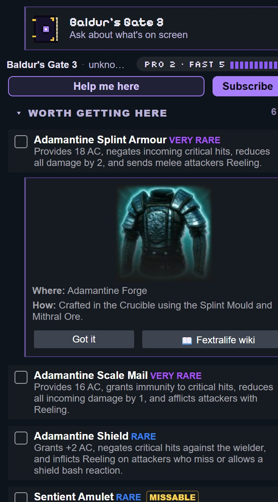
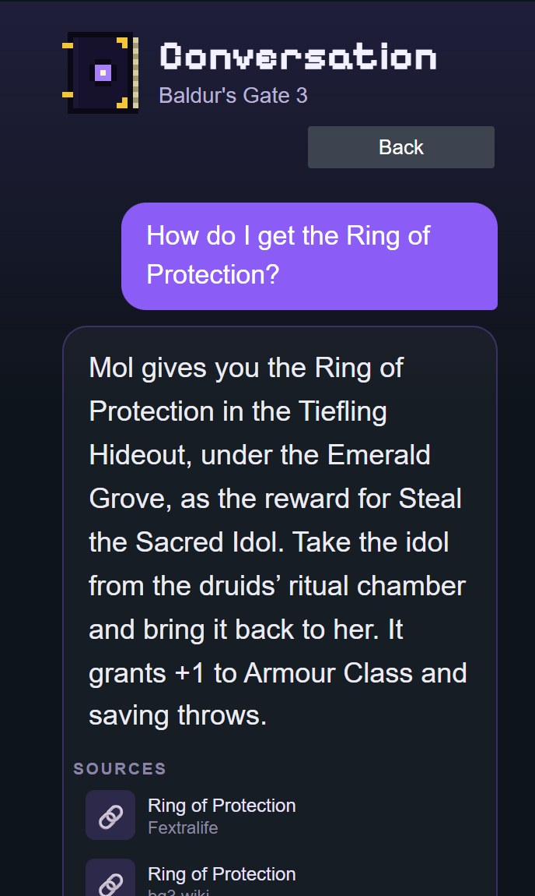

Steam Deck
Install Quest Compendium on your Steam Deck
An AI game guide in the Quick Access menu. Press Help me here and it looks at your game, works out where you are, and shows a video or picture for what you're doing, without leaving the game. About five minutes to set up.


1. Install Decky Loader
Quest Compendium is a plugin for Decky Loader, the plugin loader for Steam Deck. If you already have it, skip to step 2.
- Press the Steam button, then Power, then Switch to Desktop.
- In the browser, open decky.xyz and download the installer.
- Run it, choose the recommended release, then go back to Gaming Mode.
2. Install Quest Compendium
From DeckyHub (recommended)
DeckyHub is a community plugin store that installs Quest Compendium from its official releases and keeps it up to date.
- Open the Quick Access menu (the ⋯ button), then Decky (the plug icon), then the settings cog.
- Turn on Developer Mode. Open Developer, choose Install Plugin from URL and enter:
https://github.com/mazillka/deckyhub-plugin/releases/latest/download/DeckyHub.zip
- Open DeckyHub (the four-square icon), search for Quest Compendium and press Install.
DeckyHub is run by an independent developer, not by Quest Compendium or the Decky team.
By URL, without DeckyHub
- In Decky's settings, turn on Developer Mode.
- Open Developer, choose Install Plugin from URL and enter:
https://github.com/TuriusX/Quest-Compendium-Decky/releases/latest/download/quest-compendium-decky.zip
Installed this way, it doesn't update itself: repeat these steps with the same address to get the newest version. Settings in Quest Compendium tells you when one is out.
3. First steps
- Start a game, open the Quick Access menu, and open Quest Compendium (the book icon).
- Press Help me here. It looks at your screen and tells you where you are and what to do, with a video or picture.
- Or ask: tap a quick question like "What should I do next?", hold to talk, or type your own.
It works right away as a guest, no sign-in needed. To link your account or use Premium, open Settings in the plugin and scan the QR code with your phone.
Good to know
- Nothing leaves your Deck until you ask or press Help me here. Then one screenshot and your question go to Quest Compendium's server.
- It doesn't need root, and it never reads your Steam login.
- The full source is on GitHub, with the privacy and security notes.
- One Premium plan works on Windows, the web app and Steam Deck. See pricing.